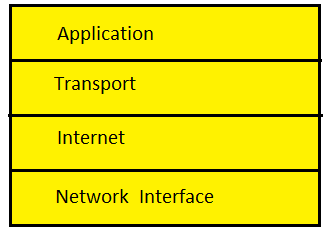
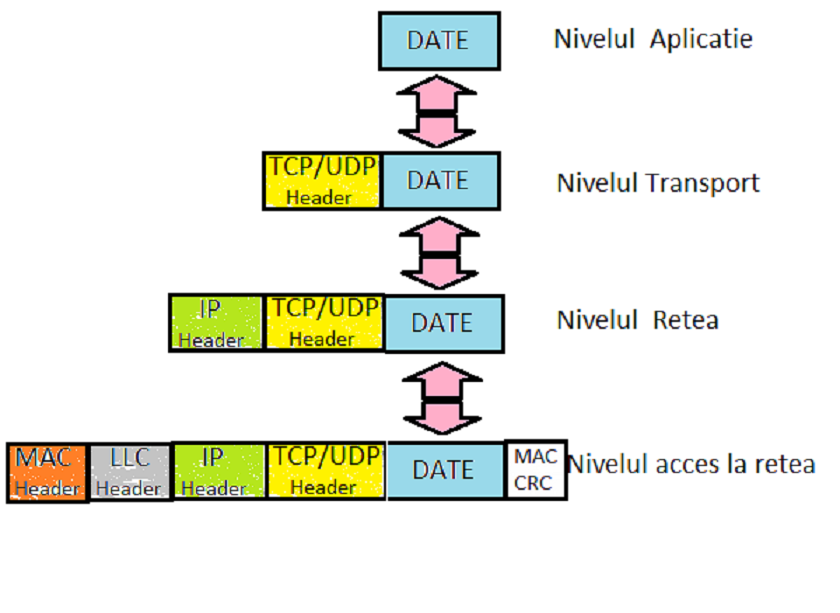

TCP/IP (Transmission Control Protocol/Internet Protocol) este cel mai utilizat protocol folosit în reţelele locale cât şi pe Internet datorită disponibilităţii şi flexibilităţi lui având cel mai mare grad de corecţie al erorilor.
TCP/IP permite comunicarea între calculatoarele din întreaga lume indiferent de sistemul de operare instalat.
În anii 1960, guvernul SUA finanţează proiectarea şi dezvoltarea procotolului TCP/IP.
Departamentul Apărării al SUA dorea un protocol de reţea care să meargă indiferent de condiţiile de pe reţea. Atât timp cât conexiunea fizică între calculatoare este funcţională şi conexiunea logică a lor să fie funcţională, chiar dacă alte calculatoare din reţea se opresc brusc.
Protocolul TCP/IP este compus din patru niveluri: Aplicaţie, Transport, Reţea şi Acces la reţea.
Nivelul Aplicaţie
Nivelul Aplicaţie se ocupă cu protocoalele de nivel înalt, codificarea, şi controlul dialogului, împachetarea datelor şi trimiterea lor la următoarele niveluri.

Nivelul Aplicaţie conţine următoarele protocoale de nivel înalt:
Nivelul Transport
Nivelul Transport asigură conexiunea logică dintre calculatorul sursă şi calculatorul destinaţie, fluxul de date şi corecţia erorilor.
Nivelul transport include protocoale TCP şi UDP.
TCP (Trasmission Control Protocol) este un protocol orientat pe conexiune care permite ca un flux de octeţi trimişi de la un calculator să ajungă fără erori pe orice alt calculator din Internet. Dacă pe calculatorul destinaţie un pachet ajunge cu erori, TCP cere retrimiterea acelui pachet.
TCP fragmentează fluxul de octeţi în mesaje discrete şi pasează fiecare mesaj nivelului Reţea.
TCP tratează totodată controlul fluxului pentru a se asigura că, calculatorul sursă nu inundă calculatorul destinaţie cu mai multe pachete decât poate acesta să prelucreze.
Toate aceste lucruri sunt realizate prin utilizarea secvenţelor de număr, sliding windows şi acknowledgments.
UDP (User Datagram Protocol) este un protocol nesigur, destinat pentru aplicaţii care trebuie să interogheze rapid, fară retrimiterea pachetelor eronate.
UDP este folosit in aplicaţiile de transmisii video sau audio şi aplicaţii client-server.
Exemple de aplicaţii care folosesc procolul UDP:
Nivelul Reţea
Scopul nivelul reţea este de a găsi cel mai optim traseu prin care poate trimite pachetele.
Protocoalele care lucrează la nivelul Reţea din modelul TCP/IP sunt:
IP caută cea mai bună cale de a trimite pachetele.
ICMP oferă capabilităţi de control şi în schimbul de mesaje.
ARP determină adresa MAC pentru adresele IP
RARP determină adresa IP pentru o adresă MAC cunoscută.
Problemele majore se referă la dirijarea pachetelor şi evitarea congestiei în reţea.
Nivelul Acces la Reţea
Nivelul Acces la Reţea se ocupă cu toate problemele legate de transmiterea efectivă a unui pachet IP pe o legătură fizică, incluzând şi aspectele legate de tehnologii şi de medii de transmisie.
Drivere, modemuri, plăci de reţea, şi alte componente se găsesc în nivelul Acces la reţea.
Nivelul de acces la reţea defineşte procedurile folosite pentru interogarea cu echipamentele de reţea şi de acces la mediu de transmisie. Protocolul standard, cum ar fi Serial Line Internet Protocol (SLIP) şi punct-la-punct Protocol (PPP) trebuie să asigure accesul la reţea prin intermediul unui modem de conectare. Multe protocoale sunt necesare pentru a determina elementele de hardware şi software, precum şi specificaţiile de transmitere la acest nivel.
Cum se formează un pachet TCP/IP
